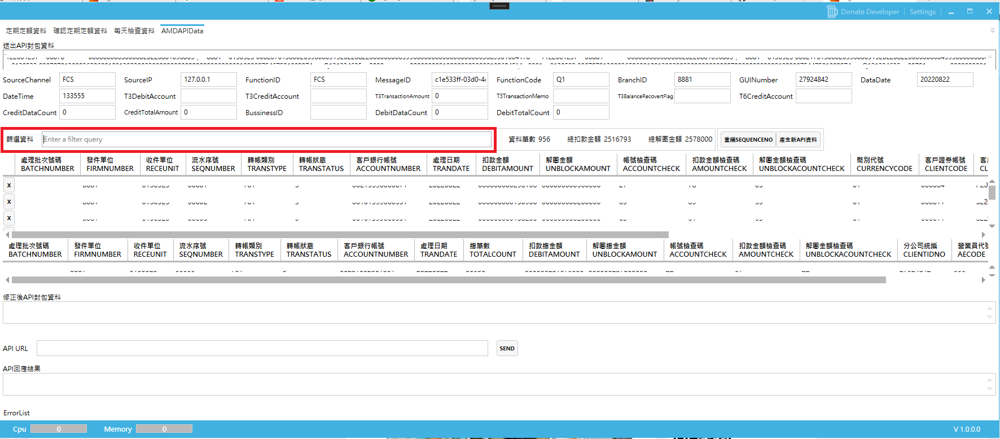
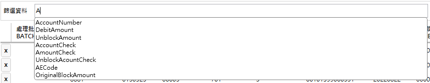

AutoCompleteTextBox
使用時機
因為工作需要讀取一些有特定格式的文字資料，所以開發了一個介面去Parsing資料
但是因為資料量很大所以再程式裡有做一個搜尋的功能，可以去篩選需要的欄位跟資料出來

結果大概長這樣，搭配一些DynamicLinq用起來很方便，可以動態的去篩選資料集中的資料

安裝套件
AutoCompleteTextBox
github

如何使用
C#
在專案中加入一個 AutoCompleteProvider 類別，並繼承ISuggestionProvider
1
2
3
4
5
6
7
8
9
10
11
12
13
14
15
16
17
18
19
20
21
22
23
24
25
26
27
28
29
30
31
32
33
34
35
36
37
38
39
40
41
| public class AutoCompleteProvider: ISuggestionProvider
{
private readonly List<string> AutoCompleteData = new List<string>();
public AutoCompleteProvider()
{
AutoCompleteData.Add("BatchNumber");
AutoCompleteData.Add("FirmNumber");
AutoCompleteData.Add("ReceUnit");
AutoCompleteData.Add("SeqNumber");
AutoCompleteData.Add("TransType");
AutoCompleteData.Add("TranStatus");
AutoCompleteData.Add("AccountNumber");
AutoCompleteData.Add("TranDate");
AutoCompleteData.Add("DebitAmount");
AutoCompleteData.Add("UnblockAmount");
AutoCompleteData.Add("AccountCheck");
AutoCompleteData.Add("AmountCheck");
AutoCompleteData.Add("UnblockAcountCheck");
AutoCompleteData.Add("CurrencyCode");
AutoCompleteData.Add("ClientCode");
AutoCompleteData.Add("ClientIdno");
AutoCompleteData.Add("AECode");
AutoCompleteData.Add("StockNo");
AutoCompleteData.Add("StockName");
AutoCompleteData.Add("OriginalBlockAmount");
AutoCompleteData.Add("OriginalBlockDate");
AutoCompleteData.Add("OriginalBlockSerial");
AutoCompleteData.Add(@"in ("")");
AutoCompleteData.Add(@"and");
AutoCompleteData.Add(@"or");
}
public IEnumerable GetSuggestions(string filter)
{
var allWord = filter.Split(' ');
string target = allWord.Last();
return AutoCompleteData.Where(x=>x.Contains(target)).ToList();
}
}
|
Xaml
1.xaml加入命名空間
1
2
3
4
5
6
7
8
9
| <window x:Class="MainWindow"
.
.
.
xmlns:editors="http://wpfcontrols.com/"
.
.
>
|
2.引用靜態資源
1
2
3
4
5
6
7
8
9
10
| .
.
.
<Window.Resources>
<local:AutoCompleteProvider x:Key="AutoCompleteProvider" />
</Window.Resources>
.
.
>
|
3.加入元件
1
2
3
4
5
6
7
8
9
10
| <editors:AutoCompleteTextBox
Width="797" Margin="15,0,0,0"
Text="{Binding LinqQuery}"
Provider="{StaticResource ResourceKey=AutoCompleteProvider}"
SelectedItem="{Binding SelectedNumber, Mode=TwoWay, UpdateSourceTrigger=PropertyChanged}"
Watermark="Enter a filter query">
<editors:AutoCompleteTextBox.LoadingContent>
<TextBlock Margin="5" FontSize="14" Text="Loading..." />
</editors:AutoCompleteTextBox.LoadingContent>
</editors:AutoCompleteTextBox>
|
做完輸入文字就會跑出你有設定好要自動完成的文字hen方便，如果不行的話作者github上也有提供sample code可以參考